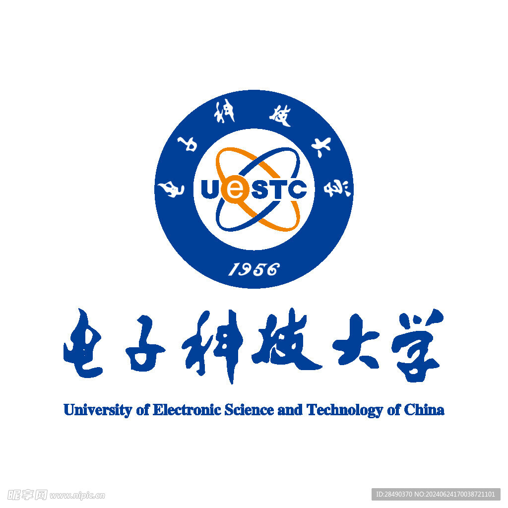
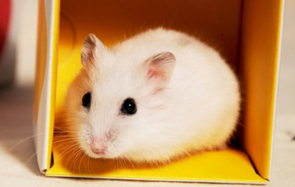

DESIGN REVIEW · 01 / 0301 / 个人简历入口
保留首页雪线气质；头像和标题形成整体，提示气泡在头像上方轻轻浮动。头像与气泡共同链接到现有个人简历页。
看看我的个人简历？
PERSONAL FIELD NOTES / ABOVE THE SNOWLINEIceaxing 的个人空间
记录探索的路径，在知识与生活的雪线之间。
文章归档 ↗ 项目探索 ↗ 标题及介绍为排版示意，正式实现保留原文。桌面头像约 112px，手机约 72px；动效尊重减少动态效果设置。
03 / 封面图进入内容体系
图片作为识别线索，保留标题和摘要的阅读优先级；以下使用仓库现有图片示意排版。

文章 · ARTICLE模拟集成电路学习笔记
16:9 图片置顶，标题、摘要与日期在下。

合集 · COLLECTION微电子学习路径
统一横向封面，配合集名称与篇数。

项目 · PROJECT探索与实践
优先展示项目截图，保留状态与技术信息。
分类页 · CATEGORY模拟电路
分类页顶部用紧凑横幅建立主题；下方条目使用小缩略图，避免重复大图。
模拟集成电路学习笔记
日期 · 分类 · 阅读信息
沿用详情页已有封面能力，统一标题下的图片比例与留白。
缺少封面时使用同色系 low-poly 山形占位；封面可配置主体焦点。文章 16:9、项目截图 16:10、详情封面约 3:1；手机保留标题完整显示。